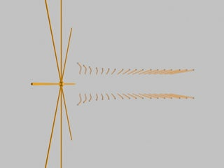
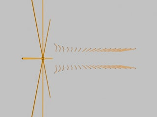

SUBJECT: The Force on a Charge Moving Through an Electric Field
DESCRIPTION: These animations show the field and force on a point charge as it moves from a region with no external electric field to a region with a constant electric field (the field points upwards, or out of the screen in the top view). As indicated by the arrow, the particle feels no force while in the empty region, but feels a constant upwards force for the entire time it spends in the region of constant external field. Note that unlike the case of a particle moving through a magnetic field, the force felt by the particle in an electric field is not proportional to its velocity.
VISUALIZATIONS: Perspective view (MPG - 1.8 MB); Top view (MPG - 1.8 MB)